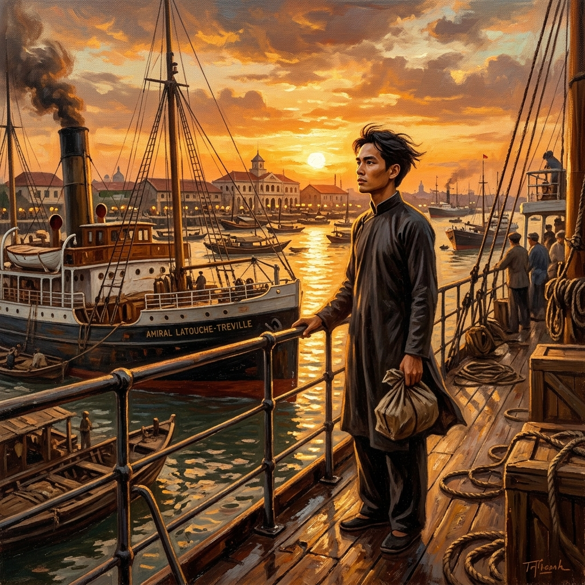
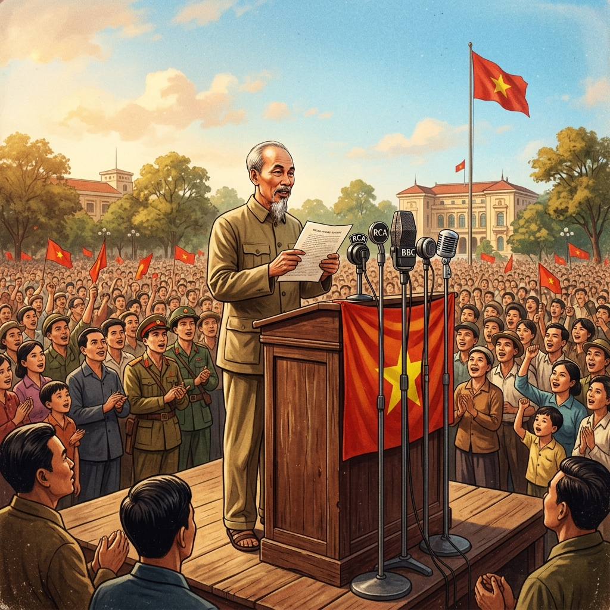

HÀNH TRÌNH & TIỂU SỬ
Chủ tịch Hồ Chí Minh
Khám phá bản đồ số mô phỏng cuộc bôn ba tìm đường cứu nước của người thanh niên yêu nước Nguyễn Tất Thành.

Mô tả chi tiết sự kiện lịch sử ở địa điểm này sẽ hiển thị ở đây.
Mối liên hệ của sự kiện với sự hình thành tư tưởng Hồ Chí Minh.
Khái quát cuộc đời cách mạng vĩ đại và di sản trường tồn của Người đối với dân tộc Việt Nam.
Sinh ngày 19/5/1890 tại làng Chùa (Nam Đàn, Nghệ An). Người lớn lên trong hoàn cảnh mất nước, chứng kiến các phong trào yêu nước chống Pháp thất bại. Với trí tuệ thông minh và lòng căm thù giặc, Người quyết định đi ra nước ngoài tìm con đường cứu nước mới.
"Tôi muốn đi ra ngoài, xem nước Pháp và các nước khác làm như thế nào, rồi trở về giúp đồng bào ta."
Đi qua nhiều nước châu Âu, châu Mỹ, châu Phi. Năm 1920 tại Pháp, Người đọc bản Sơ thảo Luận cương của Lênin về vấn đề dân tộc và thuộc địa, tìm thấy con đường giải phóng dân tộc duy nhất đúng đắn: Cách mạng vô sản. Người tham gia sáng lập Đảng Cộng sản Pháp.
Bôn ba tại Liên Xô, Trung Quốc, Thái Lan. Người viết các tác phẩm cách mạng kinh điển như Bản án chế độ thực dân Pháp, Đường Kách mệnh. Ngày 3/2/1930, Người chủ trì thành lập Đảng Cộng sản Việt Nam, thống nhất lực lượng tiên phong lãnh đạo cách mạng.
Năm 1941, Người trở về nước trực tiếp lãnh đạo cách mạng. Ngày 2/9/1945, tại Quảng trường Ba Đình, Chủ tịch Hồ Chí Minh thay mặt Chính phủ lâm thời đọc bản Tuyên ngôn Độc lập, khai sinh ra nước Việt Nam Dân chủ Cộng hòa.

Lãnh đạo toàn dân vượt qua 9 năm kháng chiến chống Pháp (đỉnh cao là Điện Biên Phủ 1954) và cuộc đấu tranh giải phóng miền Nam thống nhất đất nước. Trước khi qua đời (2/9/1969), Người để lại bản Di chúc lịch sử chứa chan tình yêu thương đồng bào, đồng chí và niềm tin thắng lợi.